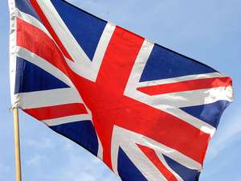
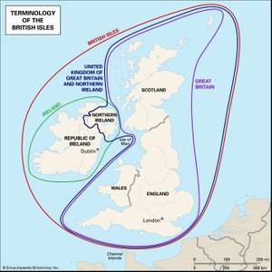

WRITTEN BY: John M. Cunningham
SHARE:

© Dawn Hudson/Dreamstime.com
The names Great Britain and United Kingdom are often used interchangeably. However, they are not actually synonymous. The reason for the two names, and the difference between them, has to do with the expansive history of the British Isles.
The British Isles are a group of islands off the northwestern coast of Europe. The largest of these islands are Britain and Ireland. (Smaller ones include the Isle of Wight.) In the Middle Ages, the name Britain was also applied to a small part of France now known as Brittany. As a result, Great Britain came into use to refer specifically to the island. However, that name had no official significance until 1707, when the island’s rival kingdoms of England and Scotland were united as the Kingdom of Great Britain.
Ireland, meanwhile, had effectively been an English colony since the 12th century, and after the emergence of Great Britain, it remained under the influence of the British crown. In 1801 it formally joined with Great Britain as a single political entity, which became known as the United Kingdom of Great Britain and Ireland—or the United Kingdom for short. However, the union lasted only until 1922, when Ireland (with the exception of six counties in the north) seceded. Ireland soon became a sovereign republic, and its former partner took on the official name of the United Kingdom of Great Britain and Northern Ireland.
Great Britain, therefore, is a geographic term referring to the island also known simply as Britain. It’s also a political term for the part of the United Kingdom made up of England, Scotland, and Wales (including the outlying islands that they administer, such as the Isle of Wight). United Kingdom, on the other hand, is purely a political term: it’s the independent country that encompasses all of Great Britain and the region now called Northern Ireland.
MAP
Great Britain versus the United KingdomThe map shows the territories of the British Isles and the names by which they should be referred to.Encyclopædia Britannica, Inc./Kenny Chmielewski
